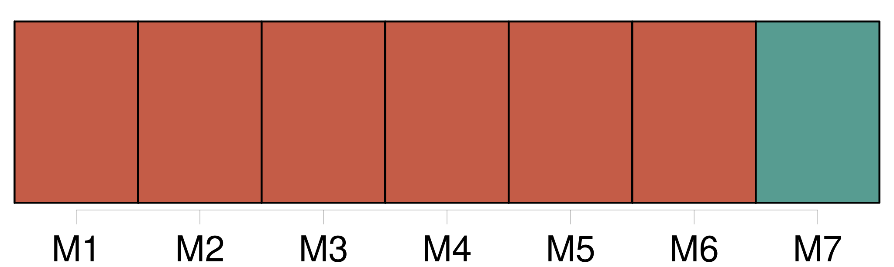
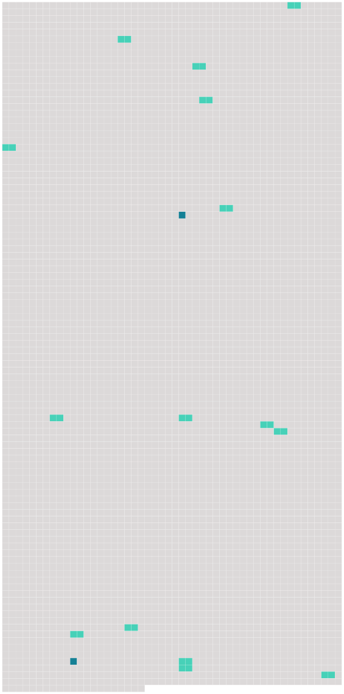

Longueur nb maillons : 17 mentions |
  |
L'expéditeur est responsable envers le transporteur de tous dommages qui pourraient résulter de l'absence, de l'insuffisance ou de l'irrégularité de ces renseignements et pièces, sauf le cas de faute de la part du transporteur ou de [ses préposés] ou mandataires. [7 phrases]
Dans le cas des bagages non enregistrés, notamment des effets personnels, le transporteur est responsable si le dommage résulte de sa faute ou de celle de [ses préposés] ou mandataires. [7 phrases]
Toutefois, le transporteur n'est pas responsable s'il établit, et dans la mesure où il établit, que la destruction, la perte ou l'avarie de la marchandise résulte de l'un ou de plusieurs des faits suivants : [7 phrases]
Cependant, le transporteur n'est pas responsable du dommage causé par un retard s'il prouve que lui, [ses préposés] et mandataires ont pris toutes les mesures qui pouvaient raisonnablement s'imposer pour éviter le dommage, ou qu'il leur était impossible de les prendre. [6 phrases]
Le transporteur n'est pas responsable des dommages visés au paragraphe 1 de l'article 17 dans la mesure où ils dépassent 100000 droits de tirage spéciaux par passager, s'il prouve : [12 phrases]
Les dispositions des paragraphes 1 et 2 du présent article ne s'appliquent pas s'il est prouvé que le dommage résulte d'un acte ou d'une omission du transporteur, de [ses préposés] ou de ses mandataires, fait soit avec l'intention de provoquer un dommage, soit témérairement et avec conscience qu'un dommage en résultera probablement, pour autant que, dans le cas d'un acte ou d'une omission de [préposés] ou de mandataires, la preuve soit également apportée que ceux -ci ont agi dans l'exercice de leurs fonctions. [35 phrases]
Si une action est intentée contre [un préposé] ou un mandataire du transporteur à la suite d'un dommage visé par la présente convention, [ce préposé] ou mandataire, s'il prouve qu'il a agi dans l'exercice de ses fonctions, pourra se prévaloir des conditions et des limites de responsabilité que peut invoquer le transporteur en vertu de la présente convention. [1 phrases]
Le montant total de la réparation qui, dans ce cas, peut être obtenu du transporteur, de [ses préposés] et de ses mandataires, ne doit pas dépasser lesdites limites. [1 phrases]
Sauf pour le transport de marchandises, les dispositions des paragraphes 1 et 2 du présent article ne s'appliquent pas s'il est prouvé que le dommage résulte d'un acte ou d'une omission [du préposé] ou du mandataire, fait soit avec l'intention de provoquer un dommage, soit témérairement et avec conscience qu'un dommage en résultera probablement. [48 phrases]
Les actes et omissions du transporteur de fait ou de [ses préposés] et mandataires agissant dans l'exercice de leurs fonctions, relatifs au transport effectué par le transporteur de fait, sont réputés être également ceux du transporteur contractuel. [1 phrases] Les actes et omissions du transporteur contractuel ou de [ses préposés] et mandataires agissant dans l'exercice de leurs fonctions, relatifs au transport effectué par le transporteur de fait, sont réputés être également ceux du transporteur de fait. [4 phrases]
Article 43
Article 44 |
 |
La ressource peut être téléchargée sur la page Ortolang
Si vous avez des questions ou vous voyez des erreurs, merci d'envoyer un mail à silvia.federzoni89@gmail.com
Site développé par S. Federzoni (contact)